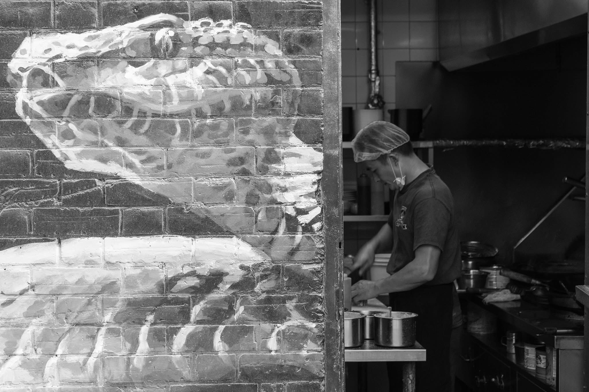
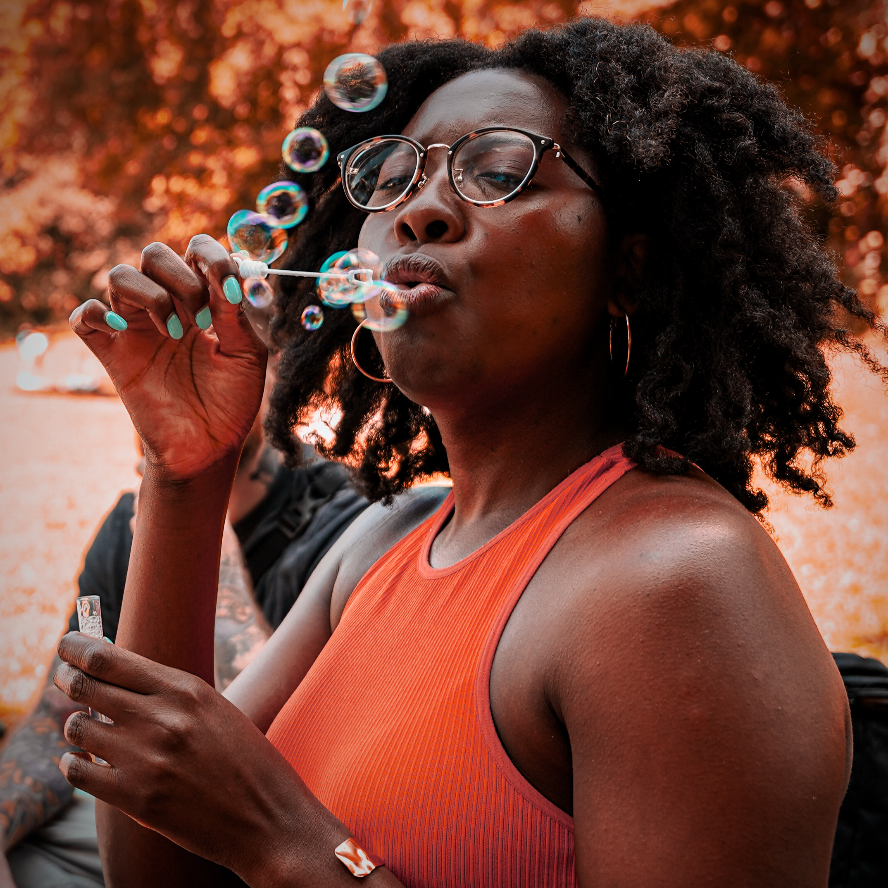

Faraz Nahyan
Engineer · Photographer · Fine art and visuals
Faraz Nahyan is an electrical engineer, photographer, and visual artist based in Toronto. With a previous degree in biochemistry, he works at the intersection of biomedical technology and human experience — combining pure science with modern electrical hardware. When he isn't building, he shoots street photography and portraiture.
Currently
- Developing a retinal prosthetics venture through the Brilliant Catalyst incubator at Ontario Tech
- Completing his fourth year of a B.Eng. in Electrical Engineering
- Focusing on street documentary composition and fine street art
- Open to engineering roles, research collaborations, and photography commissions
Get in touch — faraz.nahyan1@ontariotechu.net
Resume
Download resume (PDF) →Selected work
Street photography · Instagram
Intervals of Light
An ongoing street photography project documenting fleeting interactions, urban solitude, movement, and the relationship between light and everyday life.
@intervals.of.light →GitHub
More on GitHub
Engineering coursework, embedded systems, signal processing, and personal experiments — all public.
github.com/FarazNahyan →Portrait and street work. New shots added as the portfolio grows.
Street Photography



Portraiture


